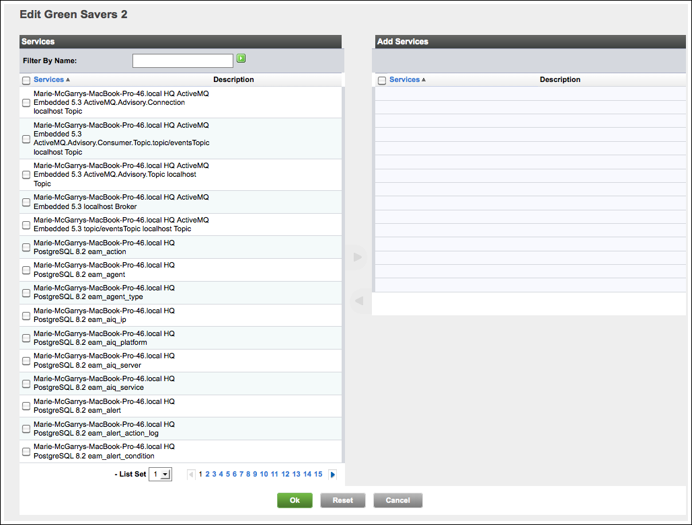
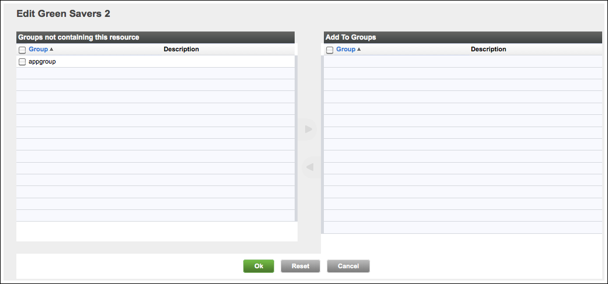

Topics marked with * relate to features available only in vFabric Hyperic.
This page has instructions for configuring an application in Hyperic.
| Learn About Applications See About Applications in Hyperic. |
Instrument Java Components (Optional)
You can gain deeper visibility into the health of Java applications by instrumenting application services.
The Hyperic Agent can auto-discover and manage Java application services via Model MBeans that adhere to a specified ObjectName naming convention and expose a specified set of service data. This enables deeper visibility into application health: you can monitor application services along with the hosting application server and its internal services. For more information, see Java Applications.
Note: Although instrumentation provides deeper visibility into Java application health, it is not required for application monitoring.
Create an Application
- Click Browse on the Resources tab.
- Click New Application in the Tools menu.
- The New Application page appears.

- The New Application page appears.
- In the "General Properties" section of the *New Application page, enter:
- Name — Supply the name of the application.
- Description — Enter a description of the application, if desired.
- Location — Enter the location of the application, if desired.
- In the "Application Properties" section of the New Application page, provide desired contact information:
- Engineering Contact
- Business Owner
- IT Contact
- Click OK.
- The Inventory page for the application appears

- The Inventory page for the application appears
Add Services to an Application
- In the "Services" section of the Inventory page for the application, click Add to List.
- The Edit Application page appears.

- The Edit Application page appears.
- Checkmark desired services and click the blue arrow to move them from the Services column to the Add Services column. (The arrow is enabled when you select a resource.)
- After moving desired resources to the Add Services column, click OK.
Add Application to a Group
- In the "Groups" section of the Inventory page for the application, click Add to List.
- The Edit Application page lists existing mixed groups of applications.

- The Edit Application page lists existing mixed groups of applications.
- Checkmark desired groups and click the blue arrow to move them from the Groups not containing this resource column to the Add to Groups column. (The arrow is enabled when you select a resource.)
- After moving desired resources to the Add to Groups column, click OK.
Monitoring an Application with Indicator Charts
After you have created an application and added services to it, you can start monitoring all the application's components as a whole using indicator charts.
Initially, the Monitor tab displays only the availability metric indicator for the new application. The services you added are listed, along with "Host Servers" (the servers that host the listed services), on the Resources minitab tab, and through those you can add more metrics to the display.